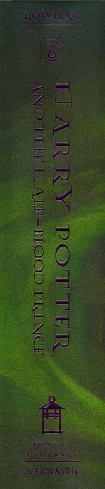

HPGarri Potter Xogvartsda sirli kitobni topib, qora kuchlarga qarshi kurashni davom ettiradi.
Garri Potter Xogvarts afsungar maktabidagi oltinchi yilida Voldemortning o'tmishi va uning zaif tomonlarini ochib beruvchi sirli kitobga duch keladi. Dambldor rahbarligida u qora kuchlarga qarshi hal qiluvchi janglarga tayyorgarlik ko'radi va ko'plab xavf-xatarlarni boshdan kechiradi. Bu qism seriyadagi eng muhim sirlar va fojiali voqealarga boyligi bilan ajralib turadi.